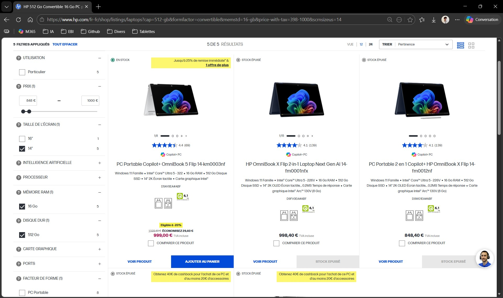
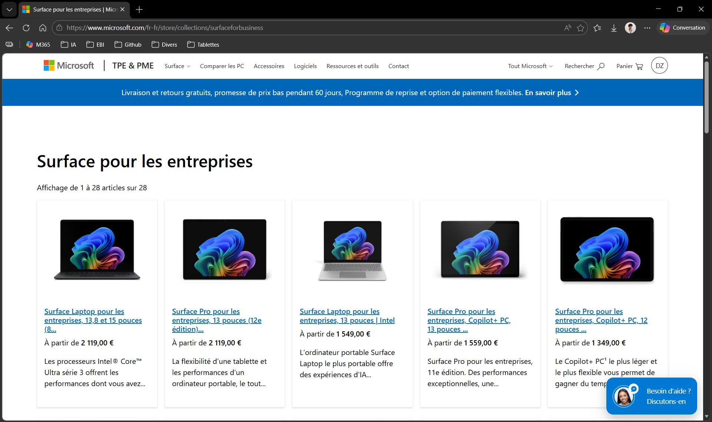
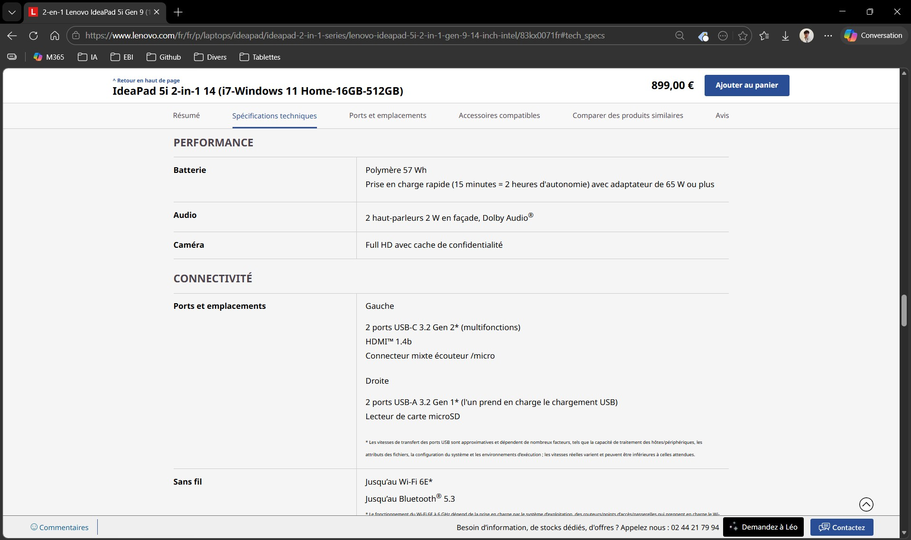
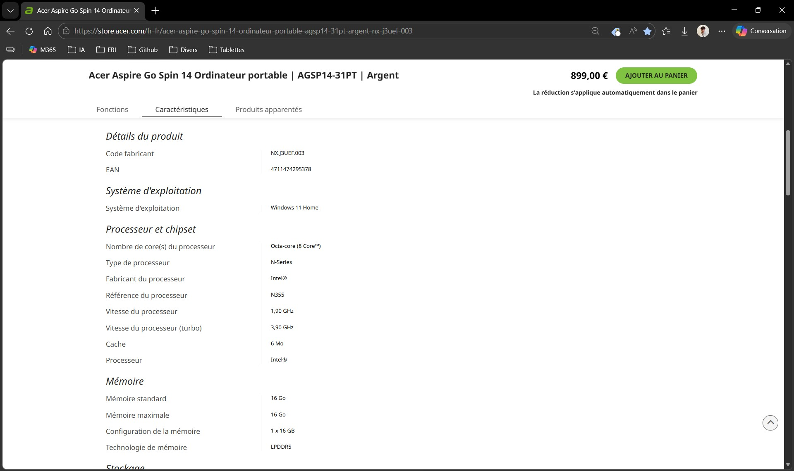

Préparation au renouvellement du matériel IT (Sourcing / Benchmark)
Présentation
Dans le cadre de mon alternance au sein du service informatique de l’EBI, j’ai participé à une étude de renouvellement d’équipements destinés au panel sensoriel.
Les postes utilisés présentaient des signes d’obsolescence, notamment des lenteurs et une perte de confort d’utilisation. Mon intervention a consisté à rechercher des modèles compatibles avec les attentes du service, puis à formaliser les résultats dans un support de comparaison exploitable.
Objectifs
Analyser le besoin exprimé par le responsable informatique.
Identifier les critères techniques et budgétaires à respecter.
Rechercher des ordinateurs portables 2-en-1 ou convertibles adaptés à l’usage du panel sensoriel.
Vérifier les caractéristiques techniques des modèles présélectionnés.
Comparer les références retenues dans un tableau synthétique.
Produire un support d’aide à la décision.
Environnement de travail
Structure d’accueil : EBI (École de Biologie Industrielle)
Service concerné : service informatique
Usage cible : panel sensoriel
Outils utilisés : navigateur web, sites constructeurs, Microsoft Excel
Constructeurs consultés : Dell, HP, Lenovo, Microsoft, Acer, Asus
Livrable produit : tableau comparatif d’une sélection de modèles
Cadrage de la demande
La mission a débuté par la présentation du besoin par mon responsable informatique. Les équipements recherchés devaient respecter plusieurs critères minimaux : Windows 11, 16 Go de mémoire vive, 512 Go de stockage, écran d’au moins 14 pouces et budget maximal de 1000 € par poste.
Recherche de modèles compatibles
J’ai consulté les sites de plusieurs constructeurs afin d’identifier des ordinateurs portables 2-en-1 ou convertibles répondant au besoin. Les filtres disponibles ont permis de cibler la taille d’écran, la mémoire vive, le stockage, le système d’exploitation, le format tactile ou convertible et le prix.


Vérification des caractéristiques techniques
Après une première sélection, j’ai consulté les fiches techniques des modèles afin de vérifier la conformité réelle des configurations : processeur, mémoire vive, stockage, écran, type de dalle, référence constructeur, garantie et prix.


Tableau comparatif et restitution
Quatre modèles ont été retenus : Dell Inspiron 14, Lenovo IdeaPad 5i 14, HP OmniBook X Flip 14 et Acer Aspire Go Spin 14. J’ai regroupé les informations essentielles dans un tableau Excel afin de faciliter la comparaison.
Le modèle HP OmniBook X Flip 14 a été privilégié, notamment pour son prix inférieur aux autres références et l’existence d’un contrat-cadre entre l’EBI et HP.
Résultats obtenus
Besoin formalisé à partir du document de cadrage.
Recherche menée auprès de plusieurs constructeurs.
Modèles non conformes écartés.
Fiches techniques vérifiées.
Quatre modèles conformes retenus et comparés.
Tableau comparatif transmis au responsable informatique.
Choix final orienté vers un modèle compatible avec les contraintes de prix et les accords fournisseurs.
Compétences mobilisées
Gérer le patrimoine informatique
Identification de ressources matérielles adaptées au renouvellement d’une partie du parc.
Répondre aux incidents et aux demandes d’assistance et d’évolution
Prise en charge d’une demande d’évolution liée à l’obsolescence des postes existants.
Travailler en mode projet
Analyse du besoin, recherche de solutions, comparaison, restitution et contribution à la décision.
Mettre à disposition des utilisateurs un service informatique
Contribution au choix d’équipements destinés à améliorer les conditions d’utilisation du panel sensoriel.
Organiser son développement professionnel
Développement d’une démarche de comparaison technique, de veille matérielle et de formalisation d’un livrable professionnel.
Bilan personnel
Cette réalisation m’a permis de travailler sur une problématique concrète de renouvellement d’équipements en entreprise. J’ai appris à transformer un besoin exprimé en critères de recherche, à comparer plusieurs solutions de manière structurée et à produire un document synthétique d’aide à la décision.
J’ai également constaté que le choix d’un équipement ne repose pas uniquement sur ses caractéristiques techniques : budget, garantie, disponibilité, fournisseurs référencés et contrats-cadres sont aussi déterminants.